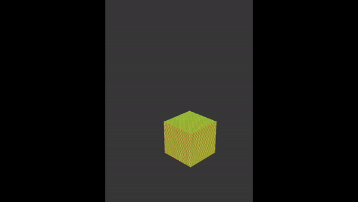

Abstract
Fluid simulation is a fascinating concept that has more moving parts than one may think. By utilizing Macklin and Müller's Position Based Fluids as a baseline, we constructed our own fluid simulator utilizing our developed ClothSim engine. Realistic fluid simulation requires many approximations of real world physics, one of the most important being incompressible flow. By implementing density constraints based on each particle and its neighbors, along with vorticity confinement and viscosity, we created a realistic particle-based fluid simulator with height-based shading and collision response.
Technical Approach
Fluid & Particle Simulation
To implement Macklin and Müller's algorithm for a realistic particle-based fluid, each particle must satisfy a certain set of constraints. The most important is a fluid's incompressibility, which means enforcing constant density of particles. By implementing this, we are also implementing how self-collisions work between fluid particles. To achieve this, we built off the existing code inside ClothSim by adding a Fluid class which contains many Particle structs, with each particle having individual physical attributes used in the collision calculations, such as acceleration, velocity, and position. To simulate how each particle interacts within the fluid, we needed a quick way to get all the neighbors of a particle. This was done by hashing each particle's position into 3D boxes, akin to the spatial hashing done to find the PointMass neighbors in ClothSim.
To enforce a constant density, we estimated the density and the change in density of each particle with the Poly6 kernel and Spiky kernel, respectively. These kernels are displayed below and exhibit a few advantages - the Poly6 kernel is easily differentiable and computationally efficient as it only depends on distance between neighboring particles while the Spiky kernel is also easily differentiable and spikes at the origin, giving more weight to nearby particles allowing for more accurate density estimation.
$$W(\vec{r}, h)=\frac{315}{64\pi h^9}(h^2-||\vec{r}||^2)^3$$
$$\nabla_{p_k}\vec{W}(\vec{r}, h) =-\frac{45}{\pi h^6}*\frac{\vec{r}}{||\vec{r}||}(h-||\vec{r}||)^2$$
Once we chose these kernels, we then calculated the density constraint (denoted as $C_i$) on each particle $i$ based on its neighbors (denoted $p_1, \dots, p_n$) with the following expression:
$$C_i(p_1, \dots, p_n) = \frac{\rho_i}{\rho_0} - 1$$
where $\rho_0$ is the rest density.
The change in a particle's position is then calculated by summing these kernels over its neighboring particles as follows:
$$ \nabla_{p_k}C_i = \frac{1}{\rho_0} \sum_j \nabla_{p_k} W(\vec{x}^*_i - \vec{x}^*_j, h)$$
where $\vec{x}^*_i$ is the predicted position of particle $i$.
Once we have an estimate for the change in the density constraint, we need to calculate a Lagrange multiplier used to enforce incompressibility, which is numerically unstable when particles are extremely close (as the kernels will return very tiny numbers). To counter this, we divide by a relaxation factor $\epsilon_r$ which we tuned to be 10,000:
$$ \lambda_i = -\frac{C_i}{\sum_i||\nabla_{p_k}\vec{C}_i||^2+\epsilon_r}$$
An issue arises when there are not enough neighbors in a particles' hash position, which again can lead a lot of clustering in order to satisfy the density constraint, so an artificial pressure is introduced to help push particles apart, and it's added to the Lagrange multiplier to calculate the final change in a particle's position.
$$s_{corr}=-k(\frac{W(\vec{x}_i^*-\vec{x}_j^*, h)}{W(\Delta\vec{q}, h)})^n$$
$$\Delta\vec{p}_i= \frac{1}{\rho_0} \sum_j (\lambda_i+\lambda_j+s_{corr})\nabla_{p_j}\vec{W}(\vec{x}_i^*-\vec{x}_j^*, h)$$
This calculation of $\Delta\vec{p}_i$ is done for each particle SOLVER_ITERATIONS times to give the particle time to converge onto a position based on its neighbors. We set this to 5 heuristically, as we observed that $\Delta\vec{p}_i$ doesn't result in a massive change for many particles, so we didn't want to run extraneous computations when unnecessary.
Fluid-Object Collision
To handle particle-wall collisions, we first tried to use a collision method similar to Project 4's ClothSimulator, but it did not appear realistic as there was not enough 'splash'. We realized that this is because the subsequent velocities of these colliding particles were not complying with our incompressibility constraint and bounce like individual particles, so we followed the Macklin & Müller paper to have collision detection happen within the calculation of our density-constrained $\Delta\vec{p}_i$. For each potential collision object, we pre-compute the position of each particle in the next time-step and check if it intersects with the colliding mesh. If so, we move the particle to be right next to the colliding object, but now with a reflected velocity governed by the following equation:
$$\vec{v}_i=\vec{v}_i-(1+c_R\frac{d}{\Delta t||\vec{v}_i||})(\vec{v}_i\cdot\vec{n})\vec{n}$$
This equation is very similar to the perfect reflection vector equation $\vec{v}_i=\vec{v}_i-2(\vec{v}_i\cdot\vec{n})\vec{n}$, but is now proportional to the distance the particle would have penetrated the mesh $d$.
Viscosity and Vorticity
|
|
|
After dealing with our density constraint, we also introduce vorticity and viscosity effects on the fluid particles, the former referring to the amount of "spin" occurring inside a fluid natively, and the latter being a fluid's resistance to movement due to cohesion, in this case under external gravity. Both of these effects are computed after collisions and incompressibility is accounted for, and are used to adjust the final position and velocity of each particle at the given time-step.
We implement vorticity $\omega$ as the curl of each particle's velocity $\nabla \times \vec{v}$ according to the Monaghan 1992, which estimates that:
$$\rho_i(\nabla \times \vec{v})_i = \sum_j m_j(\vec{v}_i-\vec{v}_j)\times\nabla_{p_j}\vec{W}(\vec{x}_i^*-\vec{x}_j^*, h)$$
where all particle masses $m_j$ are equal and can be omitted. We then confine this by taking the gradient of $\omega$ to create the applied vorticity force:
$$F_i^\text{vorticity} = \epsilon_v (\frac{\eta}{||\eta||} \times \omega_i) \text{, where } \eta = \nabla |\omega|$$
We then add XSPF viscosity ($\alpha$) in a similar fashion but with the Poly6 kernel, adjusted by a small constant $c$: $$\vec{\alpha}_i= c * \sum_j(\vec{v}_i-\vec{v}_j)*W(\vec{x}_i^*-\vec{x}_j^*, h)$$
With both these factors accounted for, we can finally calculate each particle's final velocity and update their positions at this timestep, before simulating the next all over again. $$\vec{v}^{\text{final}}_i = \frac{1}{\Delta t} (\vec{x}^*_i - \vec{x}_i) + \vec{\alpha}_i + F_i^\text{vorticity} \Delta t$$ $$\vec{x}^{\text{final}}_i = \vec{x}^*_i$$
Fine Tuning and Optimizations
Once we settled on our base algorithms and design choices, we set about fine tuning our vorticity and viscosity parameters. For our base liquid simulation, we wanted to achieve realistic behavior, mainly evaluated based on how the liquid sloshed around the container we created. Often times, incorrect parameters would result in unstable behavior and the fluid losing shape. Increasing the vorticity parameter resulted in the fluid splashing with higher peaks and changing shape more easily, which is what we expected to see. Likewise, increased viscosity should result in the substance holding its shape together more, although that was more difficult to test and demonstrate with our rendering.
We tried to personalize our fluid simulator by adapting the formulas and algorithms and optimizing our code with new approaches. We used the OpenMP library and spatial hashing to speed up particle simulations, and through trial and error determined new approximations to estimate the physics behaviors detailed in Macklin and Muller, as well as papers such as Monaghan 1992.
Problems Encountered
There were a variety of problems at pretty much every step of the way, but we'll highlight some of the more key issues that we faced.
|
|
One of the key issues we had at the beginning was this "explosive" effect when particles would come into contact with one another. We intuitvely figured that as it was currently implemented, our collisions with the plane would have the particles freeze, and thus the incompressibility of the particles would cause enough force for the falling particles to "explode". We also figured that the correction vector was too strong, which was why the particles would fly away so fast. To fix this issue, we temporarily allowed particles to move onto the plane (simply keeping their y coordinate constant) and adjusted parameters such that the correction vector wasn't so powerful.
|
|
After tackling the original issue and implementing some more features relating to collisions, vorticity, and viscosity, we found that our particles weren't fully contained in the box, so we were left the plane "flooding" from the four corners of our invisible container. To fix this, we looked into a different collision detection / response algorithm to better preserve the energy and properly contain our fluid particles. This lead us to Ďurikovič et al.'s paper on proper collision handling using the intersection method, which allowed us to better represent how fluid particles acted and helped us utilize the plane collision objects to contain particles at edge cases (literally).
Furthermore, we spent a considerable amount of time tuning our hyperparameters to accurately simulate vorticity & viscosity effects and produce a fluid that looked realistic. Since we were implementing abstract formulas, our hyperparameter values didn't have real-world units to base our numbers off of, and we often had to use trial and error. We frequently observed simulations that rapidly became unstable and unrealistic. These are mostly consequences of using approximations, and our best way to progress was to find out which combinations looked more realistic. However, a 9 second simulation could take up to 30 minutes for us to run, which resulted in a lot of time spent debugging.
What We Learned
One of the biggest things we learned was that even though fluid simulation by definition is physics-based, there are a lot of design decisions and tradeoffs to account for. There's a lot of factors that influence a fluid's behavior, mainly how any one particle is affected by the actions of its neighboring particles. These interactions result in the incompressibility, vorticity, and viscosity components that help define how a fluid flows in the real world, but there are many more approaches and real-world behaviors to account for. There's a lot to consider when rendering these fluid simulations, from determining the best kernel to best estimate densities to constantly correcting and tuning parameters to balancing between a more realistic result and computational costs. Creating an effective simulation isn't as simple as copying down equations from papers, as implementations differ from one another, so we had to cater the findings of the paper to best suit the framework (ClothSim) that we started and were familiar with.
Another thing we learned as far as producing accurate results was the importance (and somewhat tedious nature) of parameter tuning. If we were to estimate, about a quarter of the time spent on this project was just experimenting with parameters to see which resulted in the best simulation, with some of the most impactful parameters being: the box size for finding particle neighbors, the scaling of the correction vector when determining $\Delta p$, the vorticity & viscosity scaling parameters, and the relaxation parameter for computing $\lambda$.
Results

|

|

|
|
|

|
|
References
- Position Based Fluids
- Smoothed Particle Hydrodynamics
- Smoothed Particle Hydrodynamics: Simulation for Continuous Casting
- SPH: Towards Flood Simulations
- Open MP
Contributions
Aaron Shalf: Implemented the base structure of our "box" that contained and interacted with the fluid. Debugged and hypertuned vorticity and viscosity factors so that they act as expected. Contributed to overall parameter tuning.
Anthony Zhang: Adjusted baseline ClothSim framework to work with particle-based fluids. Experimented with moving planes to collide with particles to simulate a wave. Implemented a height-based shader to create more realistic scenes and "foam". Contributed to overall parameter tuning.
Eric Kusnanto: Implemented the fluid-wall collisions to complete the base FluidSim, allowing particles to respond accordingly to other collision objects. Debugged and hypertuned vorticity and viscosity factors so that they act as expected. Contributed to overall parameter tuning.
Sebastian Arevalo: Adjusted baseline ClothSim framework to work with particle-based fluids. Implemented the base Position Based Fluids algorithm to simulate incompressibility, vorticity, and viscosity. Experimented with moving planes to collide with particles to simulate a wave. Helped implement parameter-correlated shader. Contributed to overall parameter tuning.